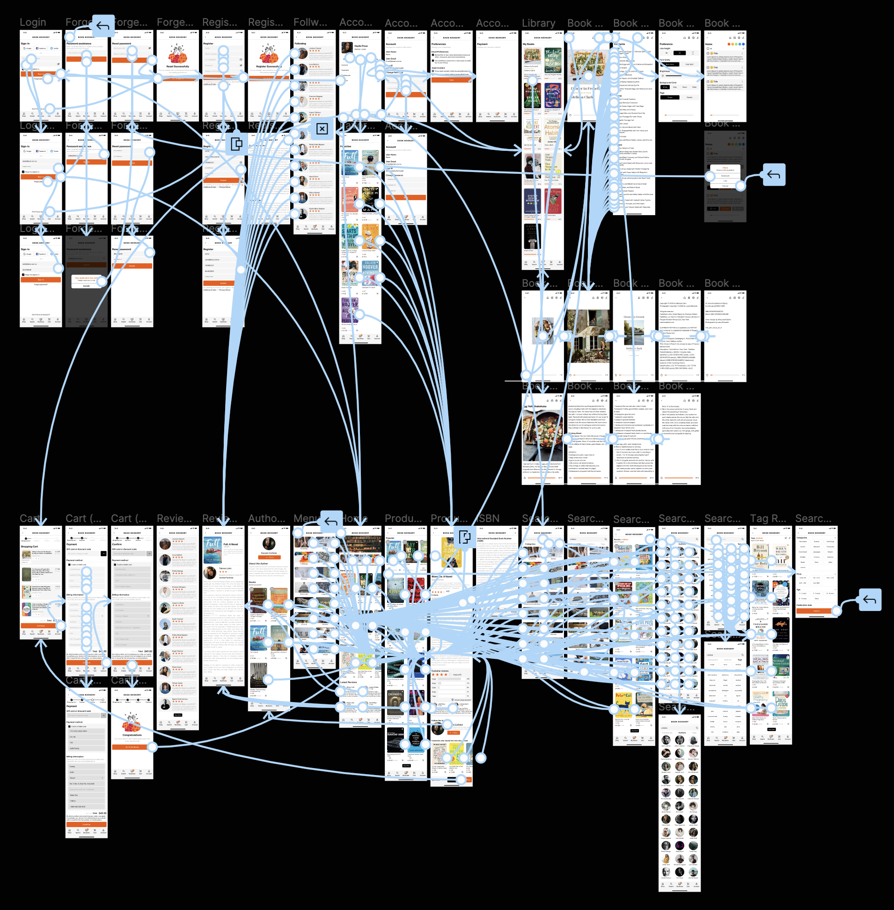

Google UX Design Certificate
Book Nookery
Book Nookery is an international shopping app for eBook lovers. Committed to providing a variety of books, as well as safe and fast book buying and reading services. Book Nookery is suitable for use during the emergency period of the epidemic. It allows people to learn online and bring people back to the way of leisure they love. We think anyone can use it.
問題 Problem
During the epidemic, people were unable to go out to buy books and pick up goods.
目標 Goal
Design an app for Book Nookery that allows users to easily order and pick eBooks.
UI、UX、Design System
Google UX Design
March 20, 2022
Product Designer
了解用戶 Understanding the user
用戶研究總結 User Research: Summary
I conducted interviews and created an empathy map to understand the users I designed for and their needs. The main user group identified through research is adults who cannot go out to buy and pick up books.
The user base confirmed initial assumptions about Book Nookery customers, but the study also showed that the epidemic was not the only factor limiting users from buying e-books. Other user issues include book prices and reading device experience, which make it difficult for users to choose only e-books and sometimes turn to buy physical books to reduce frustration.
用戶研究痛點 User research: pain points
- Information Architecture：Too many items other than books in the app, difficult to read and order.
- Notes：Unable to make notes and export notes.
- Reading Experience：Can't read the last progress immediately after clicking.
- Complicated Purchase Process：The process of switching between buying and reading books is complicated and not intuitive enough.
人物誌 Persona
使用者旅程圖 User Journey Map
競爭者分析 Competitive Audit
開始設計 Starting the design
故事板 Storyboard
class="fadeup animation"Big picture storyboard

Close-up storyboard
線稿圖 Wireframes
Paper wireframes
Taking the time to draft iterations of each screen of the app on paper ensured that the elements that made it to digital wireframes would be well-suited to address user pain points. For the home screen, I prioritized a quick and easy ordering process to help users save time.
Digital wireframes
- As the initial design phase continued, I made sure to base screen designs on feedback and findings from the user research.
- Provide users with an easy login and registration process to quickly enter the shopping process.
低保真原型 Low-fidelity Prototype
Using the complete set of digital wireframes, I created a low-fidelity prototype. The main user flow I connect to is selecting and ordering books, so the prototype can be used for usability studies.
可用性研究：結果 Usability Study: Findings
I conducted two rounds of usability studies. Findings from the first study helped guide the designs from wireframes to mockups. The second study used a high-fidelity prototype and revealed what aspects of the mockups needed refining.
完善設計 Refining the design
親和圖 Affinity diagram

視覺稿 Mockups
高保真原型 High-fidelity Prototype
The final high-fidelity prototype provides a cleaner user flow for selecting and ordering books. It also meets the needs of users for e-book reading experience and note-taking.
我學習到 What I Learned
透過這門專項課程我了解到 UX Design 整個設計流程，從最初的想法到可用性研究，以及透過受測者反饋進行迭代，觸碰到過去沒有接觸過的工具和概念，這一切我覺得非常有趣，從 0 到 1 的過程也使我有了成就感。過去的我對畫面上有美感要求，完成了這門課程後則希望自己所設計的產品不僅能夠吸引人，而是能真正站在使用者的角度，為他們解決實際的問題。